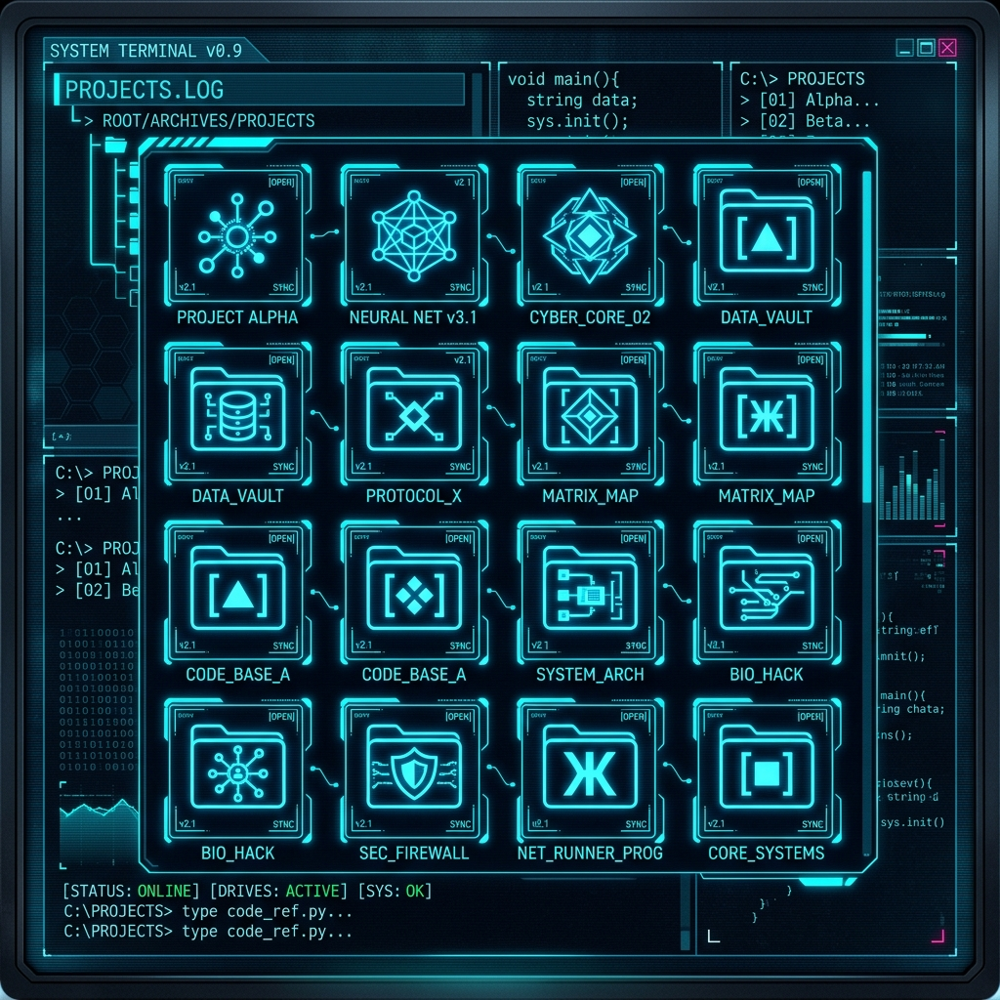

01. About_Me
I am a QA Engineer, but my scope goes far beyond that. I focus on Performance testing and I am increasingly fascinated by Security, a field I am actively exploring.
Additionally, I deeply enjoy statistics and data science. In my master's thesis, I compared the performance of traditional, deep learning, and foundation predictive models (ARIMA, NBeats, Chronos, etc.).
In my free time, I am a huge fan of Star Wars and the sci-fi genre in general. This website is a reflection of my fascination with technology, data, and the future.
QA & Security
Ensuring quality and penetrating system security.
Data Science
Predictive models and data analysis.
Sci-Fi Fan
Star Wars and fascination with future technologies.
02. Tech_&_Skills
.NET / C#
Used primarily within functional tests.
Python
My main tool for Data Science and statistics.
JavaScript
Utilized within k6 performance tests.
AI & Models
ARIMA, NBeats, Chronos, Deep Learning, Foundation models.
03. Projects

Master's Thesis: AI Models
Predictive modeling using deep learning and foundation models for time series forecasting. Explores statistical mechanics and advanced architectures applied to real-world datasets.

lptyna.cz
A website for my wife's services, built entirely without frameworks. The goal was to understand the low-level workings of the web, write clean code, and have absolute control over every element. A great experience for better understanding modern frameworks and vibecoding "under the hood".

Smart Hallway Lights
Smart home lighting project. The roadmap includes serving files from LittleFS, migrating to ESPAsyncWebServer with WebSockets, OOP refactoring, non-blocking PWM without delay(), and MQTT integration with a Captive Portal.
Interactive Statistics
A repository created out of a desire to provide a visual representation of basic and advanced statistical mechanics for the purpose of understanding course material at university. Features interactive visualizations and data modeling.

Other GitHub Projects
A collection of various other repositories including full-stack applications, microservices, and experiments. Check out my GitHub profile for the complete list.